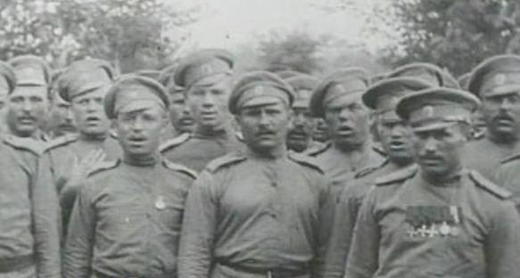

Il y a un siècle, l’Europe entière et une grande partie du monde était à feu et à sang dans ce qui reste, à ce jour, réduit aux termes de « La Der des Der » ou de « La Grande Boucherie ». Mais cette guerre avait-elle un sens ? Oui et, aussi difficile à comprendre que cela puisse paraitre un siècle plus tard, nos aïeux acceptaient l’idée de mourir pour leur patrie, convaincus que le sort de leurs familles et l’avenir de leur pays tout entier en dépendaient. Les commémorations de la Grande Guerre devraient ainsi être dédiées à la transmission de ces valeurs célébrant l’unité, une forme de cohésion nationale et le don de soi pour l’intérêt commun.
C’est malheureusement trop rarement le cas, comme si ces mots dérangeaient, comme si l’héritage était trop difficile à assumer, nous forçant à taire cette dimension. L'exemple des souffrances endurées par tout un peuple devrait pourtant nous inciter à l'humilité...
L’hommage que je rends à ces hommes qui se sont battus pour nos valeurs, je le rendrais chaque mois en retraçant les évènements sur les fronts belges, français et russes, semaine par semaine, jour par jour…
Du 3 au 9 janvier 1916
Sur les fronts Belge et Français
En ce 520ème jour de la guerre, les bombardements des régiments d’artillerie français, belges et anglais conservent, en Belgique, le même caractère de violence et bouleversent quotidiennement les organisations défensives de l’ennemi; des tirs réussis sont à signaler dans les régions de Steenstraete, Hel-Sas et Boesinghe.
De violents combats sont engagés autour de Loos, où l'artillerie lourde anglaise développe un feu terrible.
Les batteries alliées canonnent la gare de Boisleux-au-Mont, située à 7 ou 8 kilomètres au sud d'Arras, d'infime importance en temps de paix et, actuellement, très précieuse pour les Allemands: point terminus d'une voie ferrée venant de Cambrai, elle rejoint la grande ligne Paris-Calais et permet les relations rapides avec Cambrai et, de là, avec la Belgique et le Nord occupé; la destruction de cette gare cause la plus grande gêne au ravitaillement des Allemands.
Bombardement de NancySur les autres parties du front, la canonnade habituelle se poursuit, particulièrement vive à l'Est de Saint-Mihiel, en Champagne, et en Artois. Entre Mesnil-les-Hurlus et Tahure, dans le voisinage de la Courtine, une tentative d'attaque allemande est enrayée en pleine organisation. Les Allemands s'agitent beaucoup au nord de l'Aisne : les canons français répondent par une rude répression en détruisant les moulins de Chatillon, à 10 kilomètres à l'ouest de Soissons, enlevant un utile point d'appui à l'ennemi dans la vallée de l'Aisne.
L'événement dominant de la mi-janvier est la reprise des attaques allemandes sur les contreforts méridionaux du Viel-Armand : la préparation d'artillerie a été formidable et les colonnes d'assaut renforcées prirent deux sommets que nos troupes enlevèrent le soir même, après une charge irrésistible.
Nancy, ville ouverte, est bombardée une troisième fois par de fortes pièces allemandes, sans résultat appréciable : M. Poincaré, président de la République, va féliciter la population de son calme et de son sang-froid.
Sur le front russe
Les communiqués russes donnent les meilleures nouvelles de la bataille engagée depuis les marais du Pripet jusqu'au Pruth.
Dans la zone nord, la bourgade de Czarterisk d'abord conquise, puis reperdue, est à nouveau enlevée par les Russes; le cimetière de Tcharkorysk et toute une agglomération y attenant sont conquis: c'est un nouveau pas en avant vers Kovel.
Au centre, le long de la Strypa moyenne, de nouvelles positions fortifiées avec un millier de prisonniers tombent au pouvoir de nos alliés; par ailleurs, ils conservent tout le terrain occupé au cœur même des lignes autrichiennes.
C'est en Bukovine que la lutte est plus âpre sous la direction du général Mackensen: arrivés en hâte des Balkans, les renforts austro-allemands font des efforts acharnés et les plus onéreux sacrifices d'hommes afin de retarder la chute de Czernowilz; mais toutes leurs contre-attaques se brisent cette semaine devant le nouveau front russe.
Du 10 au 16 janvier 1916
Sur les fronts Belge et Français
Les Allemands font un très gros effort en Champagne, lançant à l'assaut, en masses compactes, une cinquantaine de mille hommes : les Alliés leur infligent de si lourdes pertes qu'ils arrêtent toute offensive, sauf dans les parages de la butte du Mesnil, où les batteries françaises les foudroient violemment.
Sur le front russe
L'accalmie règne à nouveau sur le front russe, mais les Allemands reçoivent dans les secteurs de Riga et de Dvinsk des renforts importants composés de troupes du landsturm.
En Galicie, les contre-offensives austro-allemandes se développent : sur la Strypa moyenne ainsi qu'au nord-est de Czernovitz, l'ennemi évacue une partie de ses retranchements. Au cours de leur poussée, les Russes ont avancé d'environ 25 à 30 kilomètres vers la capitale de la Bukovine et d'une quinzaine de kilomètres le long de la Strypa, et se mettent en mesure de garder ce qu'ils ont conquis.
Du 17 au 23 janvier 1916
Sur les fronts Belge et Français
Les aviateurs britanniques continuent à montrer une activité remarquable au-dessus et en arrière des lignes ennemies des Flandres et de l'Artois.
De la mer du Nord aux Vosges, activité coutumière de l'artillerie qui ne laisse, de jour comme de nuit, aucun répit à l'adversaire.
Dans la région picarde, les Alliés bombardent l'importante gare de Chaulnes, dont l'ennemi a fait un de ses centres de ravitaillement : des bâtiments abritant des dépôts de munitions sautent.
Ce sont également les batteries françaises qui entretiennent l'animation dans la région de Berry-au-Bac, au Nord-ouest de Reims : une colonne allemande, surprise sur la route de Laon par Corbeny, éprouve des pertes sensibles; la ferme du Choléra, à 1 500 mètres de Berry-au-Bac, à la jonction du chemin conduisant à Soissons par les bords de l'Aisne, subit un bombardement copieux, avec de gros obus qui désorganisent les tranchées adverses.
En dehors de ces tirs de destruction, les communiqués de la semaine ne signalent que des incidents sans intérêt, tels que des explosions de mines dont les adversaires se disputent les entonnoirs.
Deux groupes aériens français de bombardement, soit 24 appareils, bombardent les gares et les casernes de Metz: 130 obus sont lancés sur les objectifs désignés. Un seul appareil est contraint d'atterrir au sud-est de Metz; tous les autres rentrent indemnes.
Sur le front russe
Les Russes font preuve de ténacité et d'acharnement dans l'offensive qu'ils continuent: au nord, sur le front Riga-Dvinsk, les armées d'Hindenbourg sont réduites à l'impuissance; la moindre tentative, d'attaque de leur part est annihilée par l'artillerie de nos alliés, et, par crainte d'une brusque poussée des Slaves, le maréchal n'ose pas affaiblir ses effectifs de la Dvina, malgré le besoin de renfort qui se manifeste à l'autre extrémité du front.
Sur la Styr, les Allemands cherchent à réoccuper Tchartorysk et les hauteurs voisines, récemment tombées au pouvoir des Russes.
Les combats continuent aux confins de la Galicie et de la Bukovine : les pertes sont énormes de part et d'autre. Les Autrichiens ne peuvent reprendre les fortes positions que les troupes du général Ivanoff ont conquises sur le plateau de Karantze, à 12 kilomètres au nord-est de Czernovitz. La récente progression de nos alliés met en péril les grandes forces ennemies concentrées devant Bojan.
L'effort actuel des armées moscovites au Caucase prend des proportions imposantes : une première fois, il y a douze mois, nos alliés avaient marché sur Erzeroum, mais ils ne disposaient pas du matériel et des effectifs suffisants; aujourd'hui l'entreprise se présente dans des conditions plus
Du 24 au 30 janvier 1916
Sur les fronts Belge et Français
L'ennemi a renouvelé ses tentatives pour percer les lignes alliées : les environs d'Ypres, d'Armentières et de Loos sont les secteurs les plus agités de la ligne anglaise. L'activité des Allemands autour de Loos fait partie du plan conçu par le prince Rupprecht de Bavière de prévenir toute avance des alliés vers la plaine de Gohelle dont nos offensives nous avaient sensiblement rapprochés, tant au nord de Lens que dans la région de Vimy. L'ennemi s'est livré à une série d'attaques sans résultats, à l'est de Neuville-Saint-Vaast.
Une attaque directe contre Arras n'a pas mieux réussi : la malheureuse ville a vu s'accroître ses ruines par un bombardement prolongé, sous le couvert duquel les colonnes bavaroises se portaient de Saint-Laurent sur Saint-Nicolas, principal accès de la cité; mais notre artillerie a brisé l'élan des vagues allemandes.
En Argonne, la lutte de mines et les combats pour la possession des excavations prennent de l'intensité.
Au nord-est de Verdun, les canons à longue portée qui défendent l'accès du camp retranché effectuent des tirs heureux sur des buts éloignés : convois allemands, dépôts de munitions, etc.
Furieux de ne pouvoir obtenir aucun succès appréciables contre nos troupes, les Allemands ont voulu frapper quand même l’opinion publique en assassinant quelques Parisiens. Protégé par le brouillard, un zeppelin a survolé la capitale et lancé une quinzaine de bombes, faisant quarante-huit victimes, dont une vingtaine de morts.
Sur le front russe
Aucun changement notable dans la situation des Russes, tant sur le front occidental que sur le front asiatique : sur le front de la Dvina, l'artillerie russe se montre très active.
Autour de Czernovitz et plus au sud, vers Bojan, les Allemands en sont réduits à la guerre de mines : deux corps de Barvarois ont été transportés de France vers ce secteur. L'armée du grand-duc Nicolas poursuit, au Caucase et en Perse, la série de ses succès; l'armée turque d'Arménie est disloquée et l'ennemi reconnaît que la situation devient critique.
Partager cette page